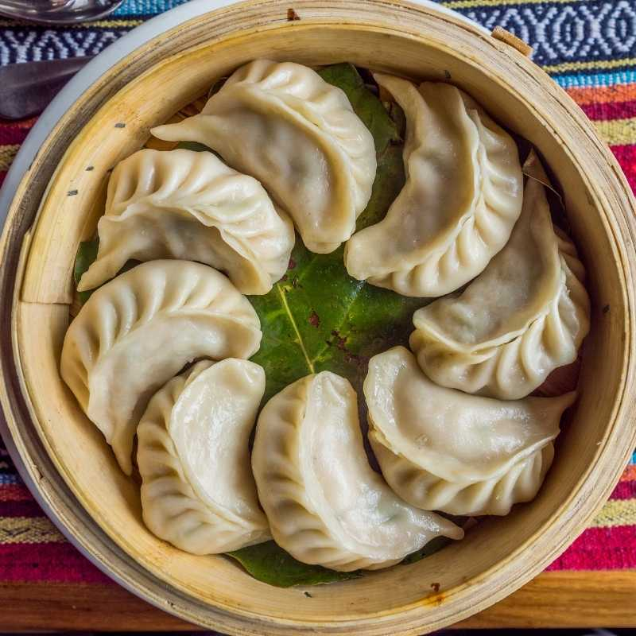

Mounton-Chicken-Momo

This is a finished photo of Mounton-Chicken-Momo you can make at home. using the following
recipe .This recipe is from the website allrecipes.
INGREDIENTS:
- Meat
- Onion
- kima
- Cheeses
- flour
STEPS:
- Make the meat sauce.
- Cook the momos
- Make the mixture of kima and flour .
- Layer the momo according to the recipe instructions.
- steam them.
- Let the momoa rest before serving.